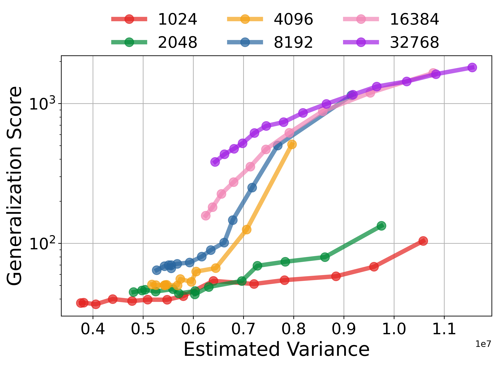
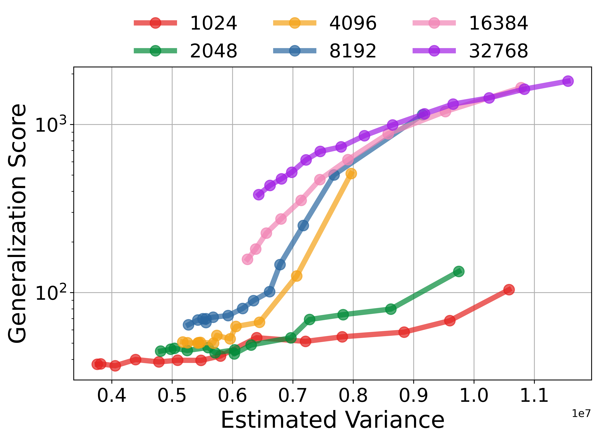

High-level depiction of the self-consuming pipeline. Top: Collapse iteration represents the replace paradigm where models are trained solely on synthetic images generated by the previous diffusion model. Middle: In the mitigated iteration, original real data and previously generated data are added to train the next-generation model. Our proposed selection methods construct a training subset and can further mitigate collapse. Bottom Right: Evolution of the generated images.

 
